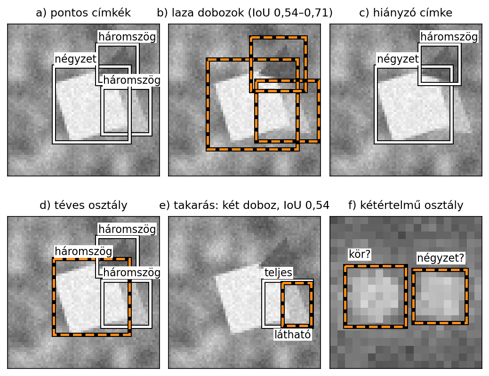

Betanítasz egy osztályozót az alakzat-adatkészleten, és a tesztképeken %-ot mérsz. Aztán a modell egy másik forrásból kap képeket: kicsit világosabbakat, elmosottabbakat vagy zajosabbakat. A pontosság hirtelen a véletlen találgatás közelébe esik, pedig a feladat ugyanaz maradt. Más esetben a teszteredmény eleve hamis: a tesztképek közel másolatai a tanítóképeknek, vagy a címkék egy része téves.
A modell csak annyira jó, amennyire az adat, amelyen tanítottuk és mértük. Ez az alfejezet az adat „élettörténetét” követi: honnan származik, ki és hogyan címkézte, hogyan lett belőle tanító és teszthalmaz, és mi történik, ha a bevetés eloszlása eltér. A mérésekhez az Metrikák: PR-görbe, AP/mAP, mIoU és kalibráltság eszközeit használjuk.
A tanítóadat egy eloszlásból vett minta. A tanulás feltevése, hogy a bevetésen érkező képek ugyanebből az eloszlásból jönnek. Ez ritkán teljesül pontosan: más kamera, más évszak, más megvilágítás, más felhasználók. Az ábrán két, az alakzat-adatkészleten tanított osztályozót mérünk egyre erősebb torzítások mellett. Az alap modell eredeti képeken tanult; a kevert modell tanítóképei véletlen erősségű fényerő-, elmosás- és zajtorzítást is kaptak.
Tiszta képen a kevert modell gyengébb ( % a %-kal szemben), erős torzításnál viszont messze megelőzi az alapot. A torzítás nem ugyanaz a baj mindegyik modellnek: amit a tanítás látott, azt a modell jobban tűri, amit nem, azt nem feltétlenül.
A mély látás eredményeit nagy, nyilvános adatkészleteken mérik. A méretek és feltételek időben változnak, ezért felhasználás előtt mindig olvasd el a hivatalos feltételeket (az alábbi adatok ellenőrizendők).
| Adatkészlet | Feladat | Nagyságrend | Felhasználási feltételek |
|---|---|---|---|
| ImageNet [S-IMAGENET] | osztályozás | az 1000 osztályos részhalmazban kb. 1,3 millió kép | kutatási, nem kereskedelmi hozzáférés |
| Pascal VOC [S-VOC] | detektálás, szegmentálás | 20 osztály, tízezres nagyságrend | a képek forrásoldalának feltételei |
| COCO [S-COCO] | detektálás, szegmentálás, kulcspont | 80 objektumosztály, százezres nagyságrend | annotáció és kép külön licenccel |
| KITTI [S-KITTI] | sztereó, áramlás, odometria, 3D | autóról rögzített sorozatok | nem kereskedelmi licenc |
| Middlebury [S-SCHARSTEIN02] [S-BAKER11] | sztereó, áramlás | kevés, nagyon pontos jelenet | hivatkozási kötelezettség |
(ellenőrizendő: méretek, licenctípusok és hozzáférési feltételek az aktuális hivatalos oldalakon)
Egy nagy adatkészlet nem semleges: tükrözi, hol és mikor gyűjtötték a képeket, milyen keresőszavakkal, és kik címkézték. Ha személyek is szerepelnek a képeken, az adatvédelmi és etikai kérdések külön figyelmet kérnek (lásd Etika, adatvédelem és szabályozás).
A címke emberi (vagy gépi) döntés eredménye. A jó annotálás írott útmutatóval kezdődik: mely osztályok léteznek, mit tegyünk a takart, levágott, apró vagy kétértelmű objektumokkal, a doboz a látható részt vagy a becsült teljes alakot fogja-e körül. Az alábbi képtár tipikus hibákat mutat.

Figyeld meg a számokat: a minden oldalon pixellel bővített („laza”) dobozok IoU-ja az igazival csak és közötti; kis objektumon néhány pixel is sokat számít. A takart háromszög látható (modális) és teljes (amodális) doboza közt az IoU : ha az egyik annotátor az egyiket, a másik a másikat jelöli, egy tökéletes detektor is „téved” az egyikkel szemben.
Két annotátor egyezési aránya félrevezető, ha az egyik osztály sokkal gyakoribb: véletlen címkézéssel is sokszor egyetértenének. A Cohen-féle kappa ezt levonja:
ahol a megfigyelt egyezés aránya, és a két annotátor osztályhoz rendelt címkéinek aránya, pedig a független, véletlen címkézés várható egyezése. Szavakban: a kappa azt méri, a véletlenen felüli lehetséges egyezésből mennyit értek el (: teljes, : véletlen szint). Dobozoknál az annotátorok páronkénti IoU-ja és az eltérő darabszám a megfelelő jelzés.
Ha a tesztcímkék aránya hibás (egyenletesen a többi osztály valamelyikére), és a modell a valódi címkéken pontosságú, független hibákkal, akkor a mért pontosság:
Szavakban: a modell akkor egyezik a hibás címkével, ha helyes címkére helyesen válaszol, vagy téves válasza véletlenül éppen a hibás címke. Egy nagyon jó modellnél a mérés felső korlátja közel : két modell százalékpontos különbsége % címkezaj mellett aligha értelmezhető. A tanító címkezajt a modern hálók részben elviselik, de a rendszeres (nem véletlen) hibát megtanulják.
Az aktív tanulás (active learning) a címkézetlen képek közül azokat kéri el, ahol a modell a legbizonytalanabb (pl. a legkisebb legnagyobb softmax-valószínűség), vagy amelyek a legkülönbözőbbek a már címkézettektől. Figyelem: az így válogatott minta nem reprezentatív, tesztre ne használd.
Definíció. Adatszivárgás (data leakage) történik, ha a tesztadatból olyan információ jut a tanításba vagy a modellválasztásba, amely a bevetéskor nem lenne meg.
A látásban tipikus formái:
A védekezés: előbb ossz csoportokra, aztán mindent a csoporton belül végezz (a csoport a legnagyobb közös forrás: sorozat, helyszín, eszköz), keress közel duplikátumokat (kis bélyegképek távolsága), és a teszthalmazt a legvégén, egyszer használd.
Legyen a kép és a címke. A tanítás és a bevetés eloszlása háromféle tipikus módon térhet el:
| Fajta | Mi változik | Mi marad | Példa |
|---|---|---|---|
| kovariáns-eltolás (covariate shift) | sötétebb kamera, elmosás | ||
| címke-eltolás (label shift) | nő a selejtarány a gyártósoron | ||
| fogalomeltolódás (concept shift) | – | új útmutató: a takartat nem címkézzük |
A kovariáns-eltolás ellen a sokféle tanítóadat és a bővítés segít; a fogalomeltolódás ellen csak az új címkék. A címke-eltolásnál a kimenet utólag korrigálható a Bayes-tétellel:
majd az osztályokra egyre normálunk. Szavakban: a modell valószínűségeit az új és a tanítási osztályarány hányadosával súlyozzuk. A korrekció akkor pontos, ha a modell kalibrált (lásd az előző alfejezetet), valóban változatlan, és ismerjük az új arányokat.
Címkék nélkül is figyelhető: egyszerű képstatisztikák (átlagfényesség, zajbecslés, élesség), a predikált osztályok eloszlása és a konfidencia átlaga. Ha ezek elszakadnak a validáción mért értékektől, mintavételezve címkézz, és mérj újra. A riasztás hiánya viszont nem bizonyíték: a fogalomeltolódás a bemeneti statisztikákban nem látszik.
A robusztussági tesztkészlet rögzített torzítások
listája rögzített maggal: fajtánként több erősségfokozat (nálunk
SHIFT_LEVELS: zaj, elmosás, fényerő, lásd a Szenzor, mintavétel, kvantálás és zaj
zajmodelljét), és fokozatonként külön pontosság. Közöld a tiszta
pontosságot, a fokozatonkénti görbét és a legrosszabb esetet; egyetlen
átlag elrejti, hol törik el a modell.
A szintetikus adat pontos címkét ad tetszőleges mennyiségben, de a valós képektől eltérhet (textúra, megvilágítás, érzékelő). A tartomány-randomizálás (domain randomization) a renderelés paramétereit szándékosan széles tartományban változtatja, hogy a valóság a modellnek csak egy újabb változatnak tűnjön. A „kevert” modellünk ennek kicsi változata. A könyv futó példáinak is vannak korlátai: az alakzatképen egy objektum van, nincs perspektíva, textúra az alakzaton, sem mozgási elmosás; az asztali jelenet matt felületű, és a kamerája pontosan ismert. Amit itt mérünk, módszertant tanít, nem a valós világ pontosságát.
Továbbvitt eredmény. Az adatlapot és a robusztussági
tesztkészletet (shapes_multi.robustness_curves,
SHIFT_LEVELS) használja az Etika,
adatvédelem és szabályozás alfejezet, a Záróprojekt III: detektálás és követés szintetikus
videón és a Vegyes vizsgafeladatsor.
Az adatlap (datasheet) az adatkészlet keletkezését, tartalmát és korlátait írja le rögzített kérdések mentén [S-DATASHEETS]. Rövidített adatlap a futó példánkhoz:
| Kérdés | synth.shapes_dataset |
|---|---|
| Cél | látási módszerek tanítása és ellenőrzése CPU-n |
| Tartalom | szürke kép, egy kör, négyzet vagy háromszög textúrázott háttéren |
| Személyes adat | nincs, a képek teljesen generáltak |
| Előállítás | programkód, mag szerint reprodukálható; zaj szórása alapból |
| Címkék | osztály, doboz, maszk, csúcsok; pontosak (az analitikus alakzatból) |
| Felosztás | könyvbeli szokás: tanító mag , validáció , teszt |
| Ajánlott használat | módszertani kísérletek, gyors regressziós próbák |
| Nem ajánlott | valós alkalmazás teljesítményének becslése |
| Korlátok | egy objektum, nincs takarás, szűk méret- és kontraszttartomány |
| Karbantartás | a könyv kódjával együtt; a generátor változása új adatverzió |
Kappa. Két annotátor képről dönti el, látható-e hibás alkatrész: mindketten „igen” , mindketten „nem” , csak az első „igen” , csak a második esetben. Az egyezés . Az első annotátor , a második „igen”-t adott, így , és .
Címkezaj. , , : .
Címke-eltolás. Egyenletes tanítási arányok mellett a modell egy képre -t ad. A bevetésen az arányok . Szorzás az új arányokkal (a közös régi arány kiesik): , összegük , tehát . A döntés a második osztályról az elsőre vált.
A kézi példa és a címkezaj szimulációja:
import numpy as np
from visionkit import evaluate as ev
first = [1] * 40 + [0] * 45 + [1] * 10 + [0] * 5
second = [1] * 40 + [0] * 45 + [0] * 10 + [1] * 5
print(f"kappa = {ev.cohen_kappa(first, second, 2):.3f}")
rng = np.random.default_rng(66)
y = rng.integers(0, 3, 200_000)
pred = np.where(rng.random(y.size) < 0.97, y, (y + rng.integers(1, 3, y.size)) % 3)
noisy = np.where(rng.random(y.size) < 0.05, (y + rng.integers(1, 3, y.size)) % 3, y)
print(f"valódi: {np.mean(pred == y):.4f} zajos címkékkel mért: {np.mean(pred == noisy):.4f}")
p = ev.label_shift_posterior([0.3, 0.5, 0.2], [1 / 3] * 3, [0.8, 0.1, 0.1])
print("címke-eltolás utáni posterior:", p.round(3))kappa = 0.700
valódi: 0.9694 zajos címkékkel mért: 0.9212
címke-eltolás utáni posterior: [0.774 0.161 0.065]Most a szivárgás. Készítünk „jelenetet” (alakzatképet), mindegyikből közel azonos képkockát (egy pixeles eltolás, kis zaj), és legközelebbi szomszéd (1-NN) osztályozót mérünk kétféle %-os felosztással:
from visionkit import synth
base = synth.shapes_dataset(200, size=64, seed=5)
rng = np.random.default_rng(105)
frames, labels, scene_id = [], [], []
for k, (img, lab) in enumerate(zip(base["images"], base["labels"])):
for _ in range(5):
moved = np.roll(img, tuple(rng.integers(-1, 2, 2)), axis=(0, 1))
moved = np.clip(moved + rng.normal(0, 0.02, img.shape), 0, 1)
frames.append(moved.reshape(16, 4, 16, 4).mean((1, 3)).ravel()) # 16×16 bélyegkép
labels.append(lab)
scene_id.append(k)
X, t, g = np.array(frames), np.array(labels), np.array(scene_id)
def nearest_accuracy(train):
test = ~train
d = (X[test] ** 2).sum(1)[:, None] + (X[train] ** 2).sum(1) - 2 * X[test] @ X[train].T
return np.mean(t[train][d.argmin(1)] == t[test])
by_frame = rng.permutation(len(t)) < 800
by_scene = np.isin(g, rng.permutation(200)[:160])
print(f"képkockánkénti felosztás: {nearest_accuracy(by_frame):.3f}")
print(f"jelenetenkénti felosztás: {nearest_accuracy(by_scene):.3f}")képkockánkénti felosztás: 1.000
jelenetenkénti felosztás: 0.405A képkockánkénti felosztásnál a tesztkép „ikertestvére” ott van a tanítóhalmazban, a %-os eredmény tehát a memorizálást méri. Jelenetenként felosztva ugyanez az osztályozó %-ot ér el, alig jobbat a találgatásnál (három osztály, %): a „kiváló” módszer valójában semmit sem tanult a formákról.
A robusztussági tesztkészlet a két betanított modellen (súlyaik:
figures/data/cv066_*.npz, a tanítást a
figures/src/cv066_common.py végzi):
from visionkit import nn, shapes_multi as sm
test = synth.shapes_dataset(1000, size=64, seed=2)
curves = {}
for name in ("alap", "kevert"):
net = nn.small_cnn(1, 3, (8, 16, 32), rng=np.random.default_rng(0))
nn.load(net, f"figures/data/cv066_{name}.npz")
net.eval()
def predict(images, net=net):
return nn.predict(net, nn.prepare_images(images, size=32)).argmax(1)
curves[name] = sm.robustness_curves(predict, test["images"], test["labels"])
for kind, levels in sm.SHIFT_LEVELS.items():
print(f"{kind}: fokozatok {levels}")
for name in curves:
c = curves[name][kind]
print(f" {name:7s}", c.round(3), f" legrosszabb: {c.min():.3f}")noise: fokozatok (0.0, 0.03, 0.06, 0.1, 0.15, 0.2)
alap [0.97 0.934 0.613 0.363 0.333 0.333] legrosszabb: 0.333
kevert [0.848 0.831 0.822 0.809 0.771 0.713] legrosszabb: 0.713
blur: fokozatok (0.0, 0.5, 1.0, 1.5, 2.0, 3.0)
alap [0.97 0.972 0.883 0.732 0.485 0.331] legrosszabb: 0.331
kevert [0.848 0.84 0.825 0.803 0.79 0.723] legrosszabb: 0.723
brightness: fokozatok (0.0, 0.1, 0.2, 0.3, 0.4, 0.5)
alap [0.97 0.969 0.925 0.823 0.689 0.522] legrosszabb: 0.522
kevert [0.848 0.839 0.817 0.775 0.695 0.606] legrosszabb: 0.606Az alap modell tiszta képen %-os, de zajnál már csak %, fölött gyakorlatilag véletlen szinten van. A kevert modell a legrosszabb esetben is % fölött marad, viszont tiszta képen csak %: ezzel a kis hálóval és korszakos tanítással a robusztusságnak ára van (hogy hosszabb tanítás vagy nagyobb háló mennyit hozna vissza, nem mértük). Látható az is, hogy fényerőnél a kevert modell előnye kicsi: a tanítás legfeljebb eltolást mutatott neki.
Végül címkék nélküli figyelés: az átlagfényesség, a MAD-alapú zajbecslés és az alap modell átlagos konfidenciája három bevetési helyzetben.
from visionkit import image
net = nn.small_cnn(1, 3, (8, 16, 32), rng=np.random.default_rng(0))
nn.load(net, "figures/data/cv066_alap.npz")
net.eval()
cases = {"validáció": synth.shapes_dataset(500, size=64, seed=1)["images"],
"zajos": sm.shift_images(test["images"][:500], noise=0.15),
"világos": sm.shift_images(test["images"][:500], brightness=0.3)}
for name, imgs in cases.items():
probs = nn.softmax(nn.predict(net, nn.prepare_images(imgs, size=32)), axis=1)
sigma = np.median([image.noise_sigma_mad(im) for im in imgs])
share = np.bincount(probs.argmax(1), minlength=3) / len(imgs)
print(f"{name:10s} fényesség {imgs.mean():.3f} zaj {sigma:.3f} "
f"konfidencia {probs.max(1).mean():.3f} predikciók {share.round(2)}")validáció fényesség 0.501 zaj 0.038 konfidencia 0.929 predikciók [0.32 0.32 0.36]
zajos fényesség 0.501 zaj 0.150 konfidencia 0.982 predikciók [0. 0. 1.]
világos fényesség 0.782 zaj 0.033 konfidencia 0.871 predikciók [0.39 0.36 0.25]A zajos helyzetben a kimenet árulkodó: az alap modell minden képet háromszögnek mond, %-os átlagos konfidenciával. Eltolt eloszláson a softmax-érték nem jelzi a bizonytalanságot; a zajbecslés () és a predikált osztályarányok viszont azonnal riasztanának. A világosított képeknél a konfidencia csak enyhén csökken, itt az átlagfényesség a legjobb jelző.
A cv066-eltolodas interaktív ábrán:
Az adat a modell és a mérés alapja. A nyilvános adatkészletek licencét és gyűjtési körülményeit ellenőrizni kell. Az annotálást útmutató vezeti; az egyetértést kappa és IoU méri, a címkezaj a mérhető pontosságot korlátozza. A szivárgás ellen csoportos felosztás, duplikátumkeresés és az érintetlen teszthalmaz véd. Az eloszláseltolódás lehet kovariáns-, címke- vagy fogalomeltolódás; címkék nélkül statisztikákkal figyelhető, a címke-eltolás Bayes-korrekcióval kezelhető. A robusztusságot rögzített torzításkészlettel, fokozatonként mérjük; a tartomány-randomizálás javíthatja, de nem garancia. Az alakzat-adatkészlet adatlapja és a robusztussági tesztkészlet a következő alfejezet, a követési záróprojekt és a vizsgafeladatsor alapja.
; az első annotátor „igen” aránya , a másodiké , így , . Ugyanaz a nyers egyezés kisebb kappát ad, mert a kiegyensúlyozatlanabb osztályoknál több egyezés várható véletlenül.
, ebből . A becslés feltevése, hogy a modell hibái függetlenek a címkehibáktól.
A másik négy testvér mind a teszthalmazban van kb. valószínűséggel, tehát valószínűséggel van testvér a tanítóhalmazban: a „teszt” gyakorlatilag ismerős képekből áll.
Példa: Gauss-zaj (SHIFT_LEVELS["noise"]), elmosás,
fényerő, kontrasztcsökkentés; mért mennyiség
és COCO AP fokozatonként, bootstrap-intervallummal, a legrosszabb eset
kiemelve. Indok: mindegyik egy érzékelő- vagy megvilágítási okhoz
köthető, a küszöbök a használati környezet méréseiből frissíthetők.
train_images = synth.shapes_dataset(2000, size=64, seed=0)["images"]
m0, s0 = train_images.mean((1, 2)).mean(), train_images.std((1, 2)).mean()
def normalized(images):
mean = images.mean((1, 2), keepdims=True)
std = images.std((1, 2), keepdims=True)
fixed = (images - mean) / np.maximum(std, 1e-3) * s0 + m0
return nn.predict(net, nn.prepare_images(fixed, size=32)).argmax(1)
norm = sm.robustness_curves(normalized, test["images"], test["labels"])
for kind in ("brightness", "noise"):
print(f"{kind:10s} eredeti {curves['alap'][kind].round(3)}")
print(f"{'':10s} normalizált {norm[kind].round(3)}")brightness eredeti [0.97 0.969 0.925 0.823 0.689 0.522]
normalizált [0.965 0.963 0.94 0.859 0.774 0.63 ]
noise eredeti [0.97 0.934 0.613 0.363 0.333 0.333]
normalizált [0.965 0.936 0.68 0.385 0.334 0.333]A normalizálás a fényerőeltolást részben ellensúlyozza (-nél helyett %), a zaj ellen alig segít. A fényerő-eltolás azért nem szüntethető meg teljesen, mert a -re vágás a világos részeket „kiégeti”, és az elveszett kontrasztot semmilyen átskálázás nem hozza vissza. A zaj nem globális erősítés–eltolás, ezért a képenkénti normalizálás nem tudja kivonni.